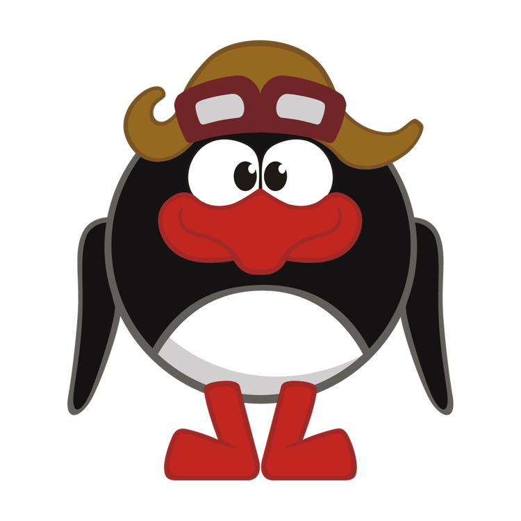
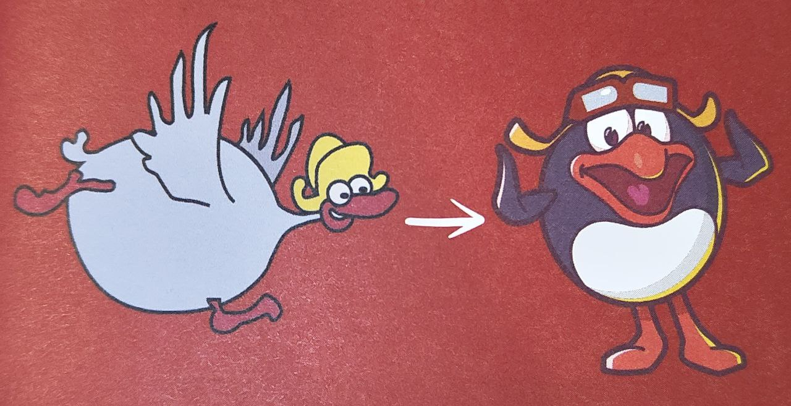
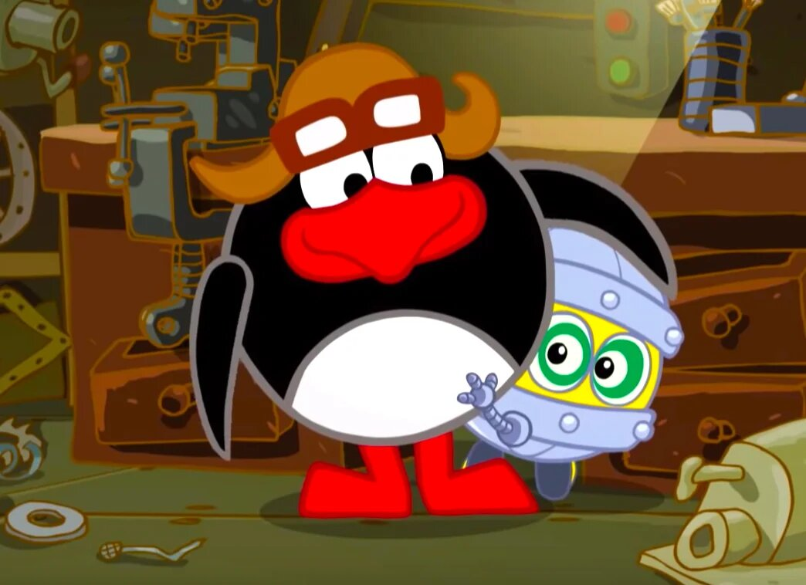
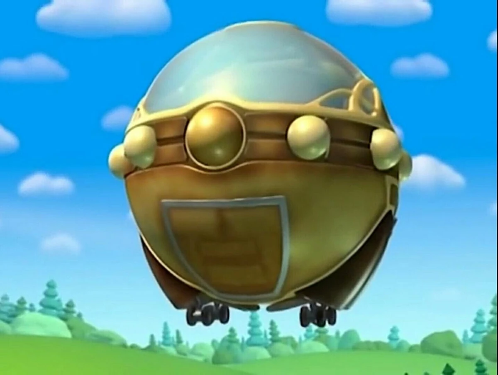
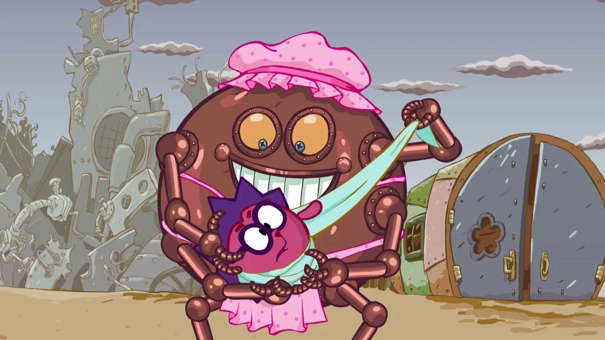

Появился из образа Гусения, жителя страны «Сластён». Тот носил шапочку почти как у Пина, изобретал всякие штуковины, интересовался технологиями и почему-то огородом.

Мы задумали приходящего героя, не из основной компании иностранца, рассказывает Денис Чернов. Помню наш мозговой штурм на эту тему. «У гуся слишком длинная шея, он не может быть шариком!» - говорит кто-то. Ладно, соглашаюсь, давайте её уберём, будет круглый. После драматической паузы и работы воображения поняли, что гусь без шеи это пингвин.
Все задвоения в характерах тоже безжалостно отсекались. Огородных дел мастером уже был назначен Копатыч. Поэтому антарктический Пин полностью занял со бой пустующую нишу Теслы - Эдисона.

Пин и Биби относятся друг к другу, как отец и сын. Пин создаёт Биби для развлечения в минуты одиночества. Скорее всего, изобретатель даже и не подозревал, что его творение будет относиться к нему, как к родному папе. К сожалению, в сериале не показан момент изобретения Биби, поэтому с уверенностью это сказать нельзя. Пин очень гордится своим сыном, который за несколько дней выучил все точные науки и значительно превзошёл своего родителя в этом плане. Единственное, что огорчает пингвина — это то, что Биби прилетает к нему на совсем короткий срок, а улетает Биби надолго. При этом Биби не забывает своего отца и редко шлёт ему немногочисленные весточки на старенький телеграф, вроде «Здравствуй, папа. У меня всё в порядке». Это часто заставляет Пина переживать за Биби, ведь неизвестность всегда пугает. Но всё равно они любят друг друга.
Из груды металла Пин может собрать всё, что угодно, и это «всё что угодно» будет как угодно работать. Результат предугадать практически невозможно. Так, необычные часы для Копатыча оказались машиной времени («Эффект бабушки»), а ускоритель для Шаролёта — машиной для перемещения в параллельные миры («Параллельный мир»). Но для Пина главное не результат, а процесс. Нельзя не оценить по достоинству его гениальные изобретения: подводная лодка или самолёт!

Именно благодаря Пину и его железным конструкциям Смешарики находят невероятные и интересные приключения, которые так любит Крош. Однажды он сконструировал вечный двигатель — машину, сжигающую мусор, которая съела половину забора, блокнот у Пина и ковёр Ёжика. Спит в большом специально оборудованном холодильнике, который стоит у него дома. За домом у него свалка размером с целый мир, на которой можно заблудиться. Он будет творить и изобретать, работать и работать, и когда-нибудь прославится за самое великое изобретение в мировой истории! Он достоин мирового признания уже за такие гениальные творения, как Шаролёт, машины времени, уменьшающий модуль Шаролёта и многие другие.

Главным отличием изобретений Пина является то, что они нередко обретают свой характер. Особенно это касается роботов: робот-сын Биби обрёл характер настоящего ребёнка и поэтому стал любимцем и Пина и его друзей; по Игогоше 2.0 вообще невозможно сказать, что это робот; даже Железная Няня, которая показана во многих сериях, как простой робот-помощник Смешариков, способна чувствовать смущение, радость и грусть («Добрая фея»). Это объясняется, скорее всего, тем, что Пин получает истинное удовольствие от процесса изобретения и вкладывает в каждый сконструированный или починенный прибор часть своей души. Основные направления изобретений Пина — облегчение жизни, нахождение нового топлива, экологические технологии.
Канувший в Лету Гусений всё-таки появился в одноимённой серии нового сезона в образе инопланетного счастьеведа.